다른 디부이 캘린더 만든거 따라 “만약 나도?” 한다면 가정하고
월루하면서 흐린눈으로 2026 먼슬리 픽처 피킹해봄
<12월> (지나간 또는 아직 찾아오지 않은) 크리스마스
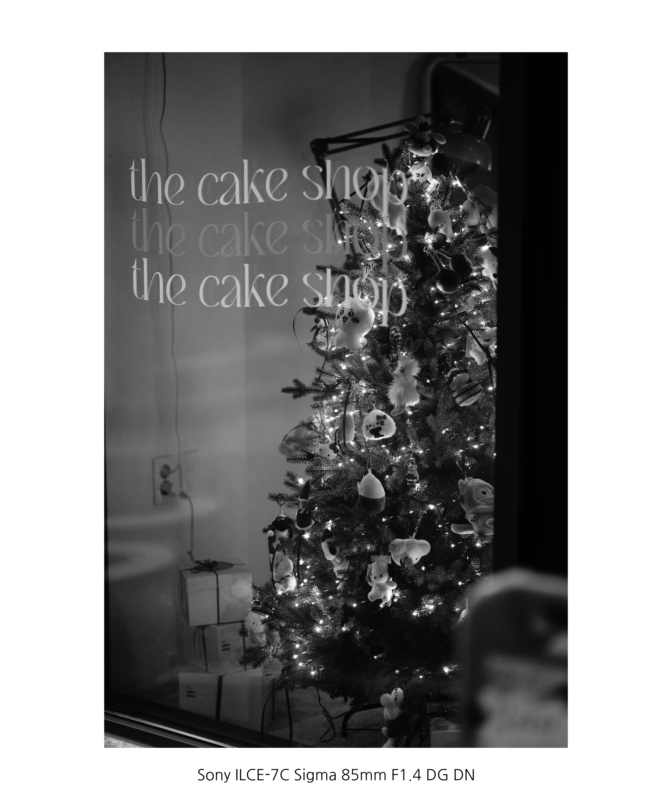
<1월> 기장 오랑대 새해 일출
<2월> UN공원 메타세콰이어길
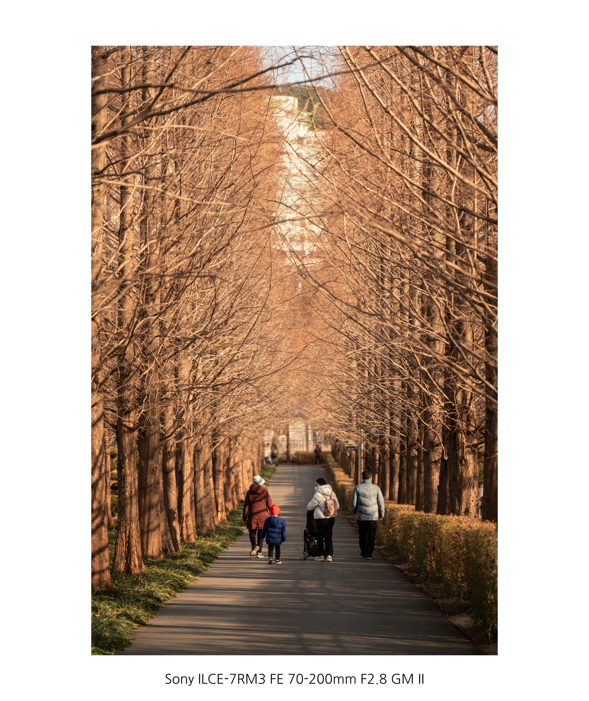
<3월> 양산 원동 순매원
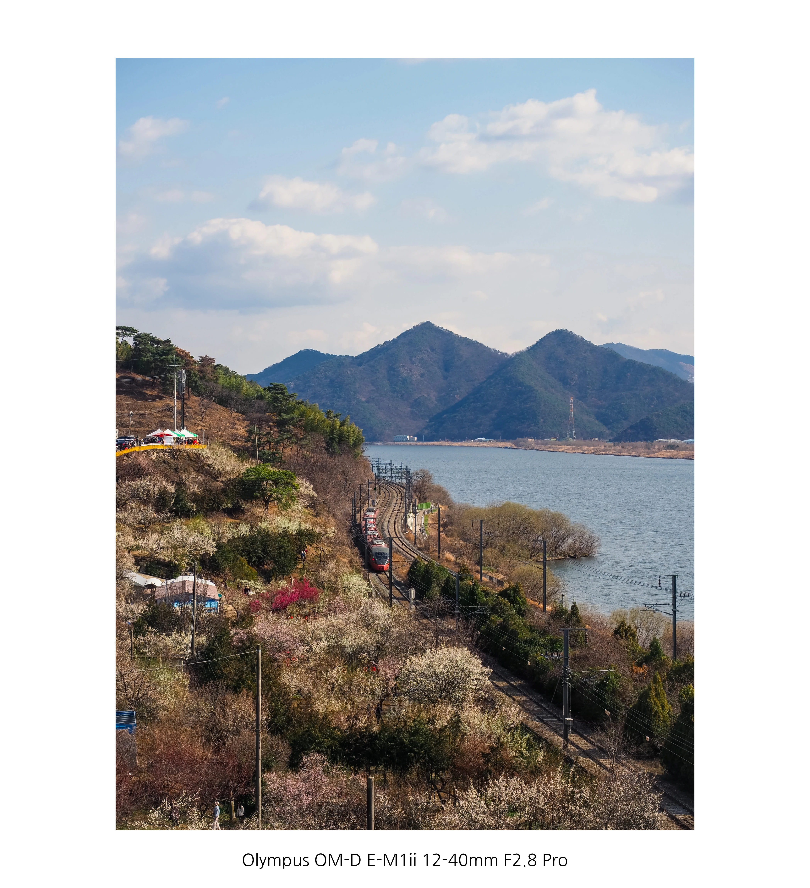
<4월> 부산 개금 벚꽃길
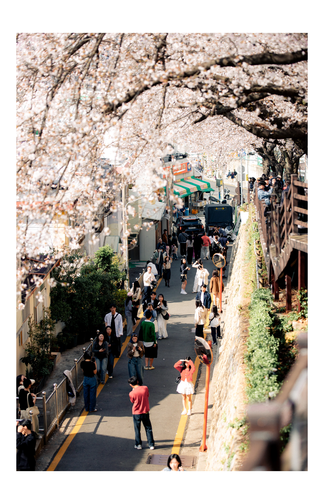
<5월> 영도 흰여울마을
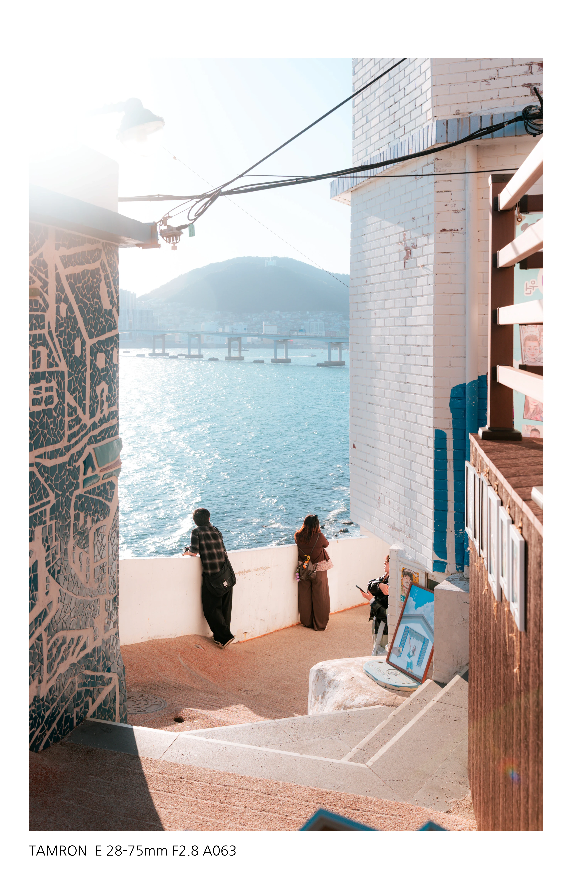
<6월> 삼락공원 숲길
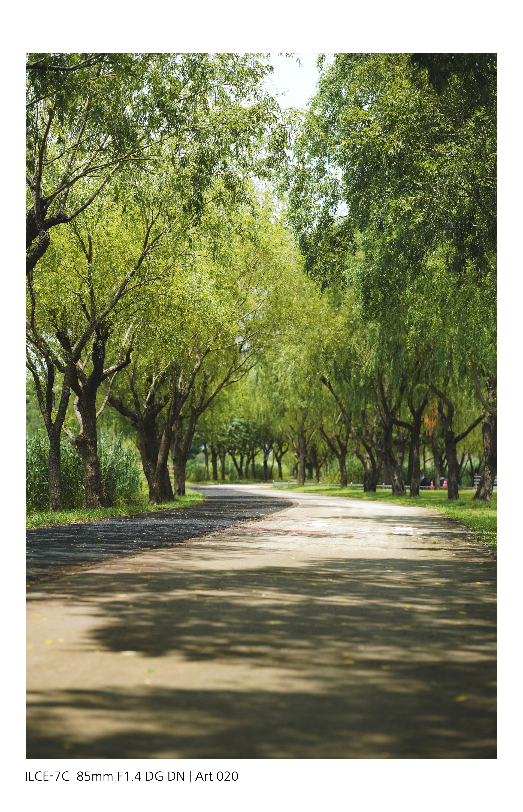
<7월> 수영동 능소화 담벼락
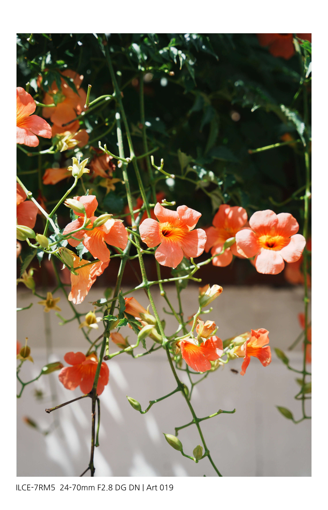
<8월> 울산 그랜드휠
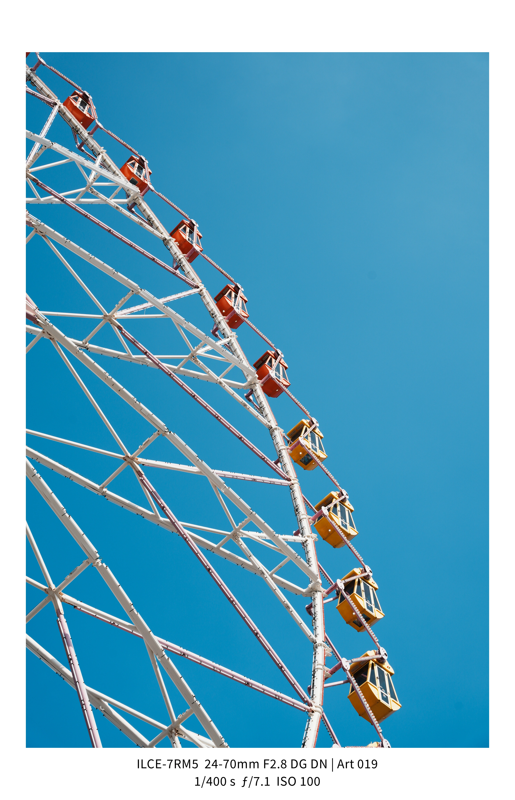
<9월> 부산 백양산 운수사
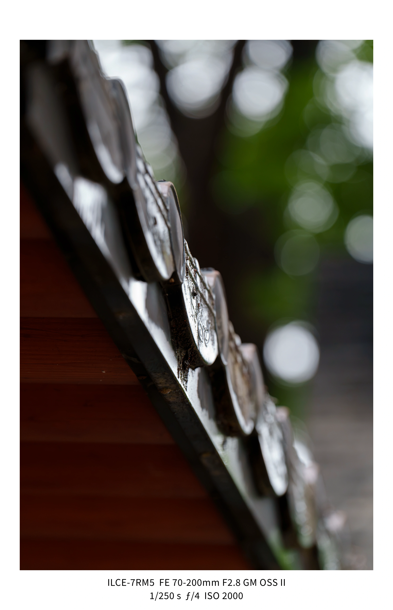
<10월> 창원 주남저수지 논밭
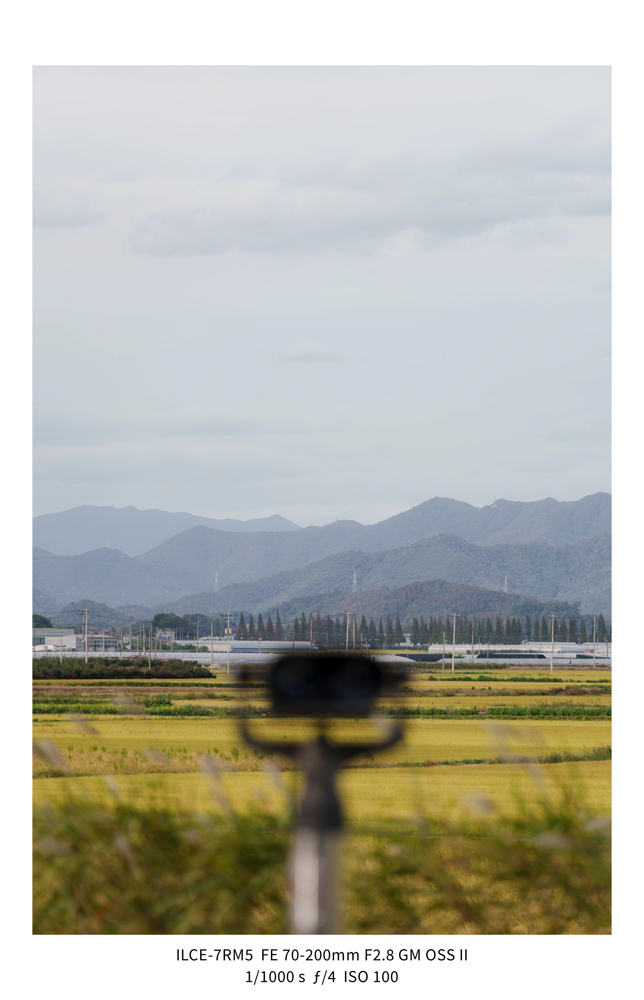
<11월> 부산 불꽃축제
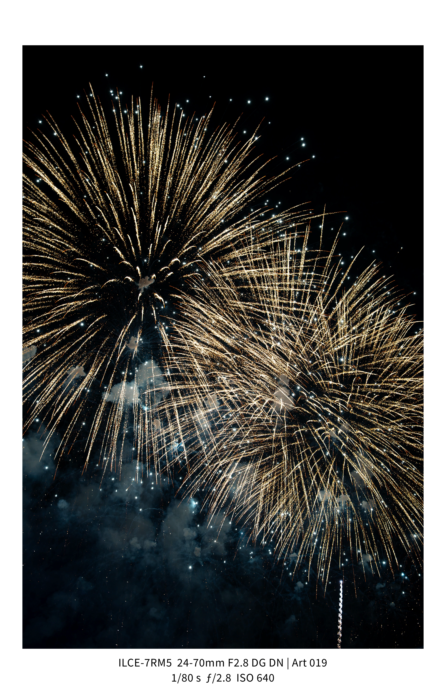
댓글
수집 당시 댓글 25개
펩시제로슈거 · 11.19 11:21:51
· aseven · 11.19 11:25:07
mochagold · 11.19 11:33:50
· aseven · 11.19 12:11:32
아조씨 · 11.19 13:20:42
· aseven · 11.19 13:28:56
파도. · 11.23 07:00:42
· 말랑보추 · 11.23 07:17:13
· 실베도로롱 · 11.23 07:18:34
봇치쟝 · 11.23 07:01:17
실베도로롱 · 11.23 07:09:06
· 말랑보추 · 11.23 07:17:18
· 파도. · 11.23 07:17:59
말랑보추 · 11.23 07:17:23
· 파도. · 11.23 07:17:53
· 실베도로롱 · 11.23 07:17:57
히이잉 · 11.23 07:19:06
히이잉 · 11.23 07:29:06
ㅇㅇ · 11.23 07:45:46
히이잉 · 11.23 07:47:06
히이잉 · 11.23 08:11:07
히이잉 · 11.23 08:41:08
히이잉 · 11.23 09:21:10
· ㅇㅇ · 11.23 09:56:17
ㅇㅇ · 11.23 13:35:46